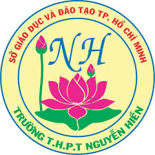
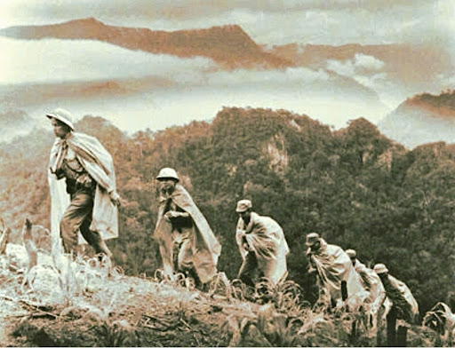

Từ chất thơ hào hùng đến góc nhìn Kỷ nguyên số
Bạn đã bao giờ tự hỏi điều gì khiến “Tây Tiến” vẹn nguyên sức hút qua bao thế hệ? Hãy cùng mở trang tập san này để tìm lời giải đáp và tua ngược dòng thời gian về với núi rừng miền Tây hùng vĩ!
| STT & Họ và Tên thành viên | Nhiệm vụ được phân công |
|---|---|
| 1. [Tên thành viên 1] | Thiết kế Bìa & Layout chung |
| 2. [Tên thành viên 2] | Thiết kế Bìa & Layout chung |
| 3. Lê Tấn Lộc | Soạn nội dung Trạm 1 & Trạm 2 |
| 4. [Tên thành viên 4] | Soạn nội dung Trạm 1 & Trạm 2 |
| 5. [Tên thành viên 5] | Soạn nội dung Trạm 1 & Trạm 2 |
| 6. [Tên thành viên 6] | Trạm 3: Tranh ký họa & Thơ cảm thụ |
| 7. [Tên thành viên 7] | Trạm 3: Tranh ký họa & Thơ cảm thụ |
| 8. [Tên thành viên 8] | Trạm 4: Xây dựng nội dung Diễn đàn |
Bấm vào từng trạm để khám phá chi tiết nội dung tập san
1. Chân dung nhà thơ Quang Dũng (1921 – 1988)
Nhà thơ Quang Dũng tên thật là Bùi Đình Diệm, quê ở huyện Đan Phượng, Hà Nội. Ông là một nghệ sĩ đa tài: vừa viết văn, làm thơ, vừa vẽ tranh và soạn nhạc. Hồn thơ Quang Dũng đậm chất phóng khoáng, lãng mạn, hào hoa và tinh tế — mang nét đặc trưng của người tri thức Hà Thành xếp bút nghiên lên đường chiến đấu nhưng luôn nhạy cảm trước vẻ đẹp của thiên nhiên và con người. Thơ ông giàu tính tạo hình và âm nhạc, kết hợp hài hòa giữa "thơ - họa - nhạc".
2. Hoàn cảnh sáng tác và tác phẩm Tây Tiến
Tác phẩm gắn liền với binh đoàn Tây Tiến – đơn vị được thành lập vào đầu năm 1947 với nhiệm vụ phối hợp với quân đội Lào để bảo vệ vùng biên giới Tây Bắc. Địa bàn hoạt động của đoàn quân vô cùng rộng lớn, gian khổ và hiểm trở. Chiến sĩ Tây Tiến phần lớn là thanh niên, học sinh, sinh viên Hà Nội, dân trí thức trong đó Quang Dũng đảm nhiệm vị trí Đại đội trưởng.
Đến cuối năm 1948, đơn vị Tây Tiến giải thể để thành lập các đơn vị mới, Quang Dũng chuyển sang công tác tại đơn vị khác. Rời xa đoàn quân cũ, tại làng Phù Lưu Chanh, nỗi nhớ hoài niệm về những ngày tháng gian nan mà ấm áp tình đồng chí, cùng vẻ đẹp hùng vĩ, thơ mộng của miền Tây Bắc đã thôi thúc ông sáng tác nên bài thơ.

Hình ảnh tư liệu: Đoàn quân Tây Tiến vượt núi rừng Tây Bắc.
Ban đầu, tác phẩm có nhan đề là "Nhớ Tây Tiến", về sau được rút gọn thành "Tây Tiến" để làm nổi bật hình tượng một binh đoàn hào hùng, kiêu hãnh. Bài thơ sau đó được in trong tập Mây đầu ô (1986), trở thành một trong những trang thơ chống Pháp xuất sắc nhất của nền văn học Việt Nam hiện đại.
Thiên nhiên hiện lên với vẻ đẹp hoang sơ, hiểm trở nhưng cũng đầy nên thơ:
Bằng nỗi nhớ tha thiết, Quang Dũng đã đưa độc giả đến với những cung đường hành quân tàn khốc, nơi thiên nhiên hiện lên vừa dữ dội vừa mang vẻ đẹp thơ mộng, trữ tình. Sự đan xen giữa hai sắc thái đối lập đã xoa dịu đi những khốc liệt gian lao, cho thấy tâm hồn tinh tế của người lính.
Vẻ đẹp bi tráng của người lính được khắc họa chân thực qua ngoại hình khác thường (đoàn quân mọc tóc, quân xanh màu lá) nhưng ẩn chứa bên trong là ý chí kiên cường, tâm hồn lãng mạn, ngang tàng qua hình ảnh "Mắt trừng gửi mộng qua biên giới / Đêm mơ Hà Nội dáng kiều thơm".
Bên cạnh đó là sự hi sinh cao cả qua câu thơ "Chiến trường đi chẳng tiếc đời xanh / Áo bào thay chiếu anh về đất / Sông Mã gầm lên khúc độc hành", khẳng định tinh thần quyết tử cho Tổ quốc quyết sinh.
Kết hợp nhuần nhuyễn giữa bút pháp lãng mạn và hiện thực; hệ thống từ Hán Việt cổ kính; ngôn ngữ giàu tính tạo hình (các từ láy khúc khuỷu, thăm thẳm, chơi vơi) cùng chất nhạc, chất họa đặc trưng làm nên phong cách thơ Quang Dũng.
Góc sáng tạo hội họa - âm nhạc - thơ ca của tập thể Nhóm
TÁC PHẨM NHÓM
[KHU VỰC DÁN TRANH KÝ HỌA NHÓM]
Minh họa đuốc hoa, hội xòe & nụ cười chiến sĩ
“Doanh trại bừng lên hội đuốc hoa...”
BÀI THƠ CẢM THỤ
— Sáng tác bởi tập thể Nhóm —
Kết nối lý tưởng cống hiến của người lính Tây Tiến năm xưa với bản lĩnh, trách nhiệm của thế hệ trẻ hôm nay trong kỷ nguyên số.
Thành phần tham gia: MC Minh Anh (CLB Văn Học), Lan Chi (CLB Lịch Sử), Quốc Bảo (CLB Công nghệ trẻ).
MC Minh Anh: Chào mừng các bạn đến với diễn đàn “Tiếp lửa khát vọng”! Hình ảnh người lính Tây Tiến “chẳng tiếc đời xanh” hay “áo bào thay chiếu anh về đất” là biểu tượng đẹp nhất cho lý tưởng “Quyết tử cho Tổ quốc quyết sinh”.
Lan Chi (CLB Lịch sử): Đúng vậy, lịch sử là điểm tựa cho hiện tại. Biến lòng biết ơn thành hành động là thấu hiểu quá khứ, bảo tồn di sản và lan tỏa giá trị truyền thống bằng tư duy sáng tạo của người trẻ.
Quốc Bảo (CLB Công nghệ trẻ): Thử thách hôm nay không còn là bom đạn mà là làm chủ tri thức. Nếu thế hệ Tây Tiến cầm súng bảo vệ bờ cõi, thì thanh niên ngày nay dùng công nghệ và trí tuệ để nâng tầm vị thế Việt Nam trên trường quốc tế.
MC: Cảm ơn những chia sẻ tuyệt vời! Hãy cùng nhau tiếp nối tinh thần Tây Tiến, biến niềm tự hào quá khứ thành hành động cống hiến thực tế mỗi ngày!